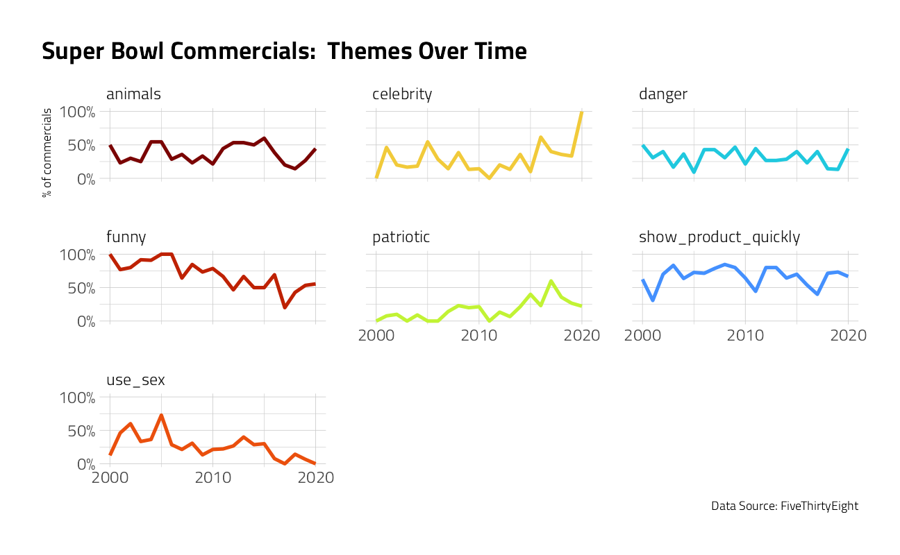
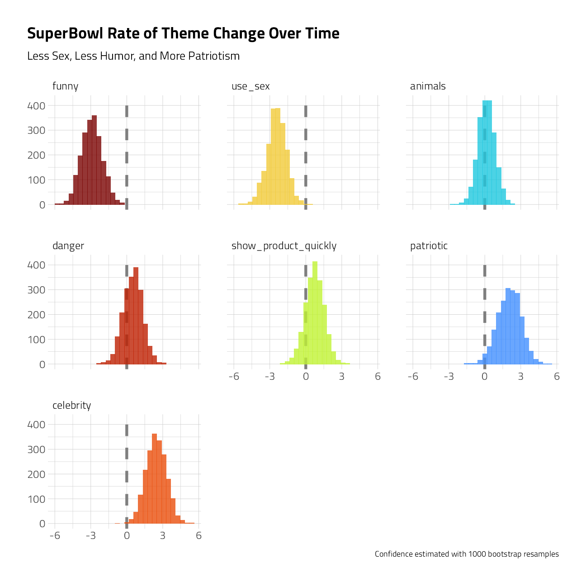

Last updated: 2021-09-29
Checks: 7 0
Knit directory: myTidyTuesday/
This reproducible R Markdown analysis was created with workflowr (version 1.6.2). The Checks tab describes the reproducibility checks that were applied when the results were created. The Past versions tab lists the development history.
Great! Since the R Markdown file has been committed to the Git repository, you know the exact version of the code that produced these results.
Great job! The global environment was empty. Objects defined in the global environment can affect the analysis in your R Markdown file in unknown ways. For reproduciblity it’s best to always run the code in an empty environment.
The command set.seed(20210907) was run prior to running the code in the R Markdown file. Setting a seed ensures that any results that rely on randomness, e.g. subsampling or permutations, are reproducible.
Great job! Recording the operating system, R version, and package versions is critical for reproducibility.
Nice! There were no cached chunks for this analysis, so you can be confident that you successfully produced the results during this run.
Great job! Using relative paths to the files within your workflowr project makes it easier to run your code on other machines.
Great! You are using Git for version control. Tracking code development and connecting the code version to the results is critical for reproducibility.
The results in this page were generated with repository version 12e0e87. See the Past versions tab to see a history of the changes made to the R Markdown and HTML files.
Note that you need to be careful to ensure that all relevant files for the analysis have been committed to Git prior to generating the results (you can use wflow_publish or wflow_git_commit). workflowr only checks the R Markdown file, but you know if there are other scripts or data files that it depends on. Below is the status of the Git repository when the results were generated:
Ignored files:
Ignored: .Rhistory
Ignored: .Rproj.user/
Ignored: catboost_info/
Ignored: data/2021-09-08/
Ignored: data/CNHI_Excel_Chart.xlsx
Ignored: data/CommunityTreemap.jpeg
Ignored: data/Community_Roles.jpeg
Ignored: data/YammerDigitalDataScienceMembership.xlsx
Ignored: data/acs_poverty.rds
Ignored: data/fmhpi.rds
Ignored: data/grainstocks.rds
Ignored: data/hike_data.rds
Ignored: data/us_states.rds
Ignored: data/us_states_hexgrid.geojson
Ignored: data/weatherstats_toronto_daily.csv
Untracked files:
Untracked: analysis/2021_09_29_torch.Rmd
Untracked: code/YammerReach.R
Untracked: code/work list batch targets.R
Unstaged changes:
Modified: analysis/ChicagoTrafficInjuries.Rmd
Modified: code/_common.R
Note that any generated files, e.g. HTML, png, CSS, etc., are not included in this status report because it is ok for generated content to have uncommitted changes.
These are the previous versions of the repository in which changes were made to the R Markdown (analysis/2021_03_02_tidy_tuesday.Rmd) and HTML (docs/2021_03_02_tidy_tuesday.html) files. If you’ve configured a remote Git repository (see ?wflow_git_remote), click on the hyperlinks in the table below to view the files as they were in that past version.
| File | Version | Author | Date | Message |
|---|---|---|---|---|
| Rmd | 12e0e87 | opus1993 | 2021-09-29 | make the plot the active tab, make aspect ratio = 1 |
| html | 2be8d64 | opus1993 | 2021-09-29 | Build site. |
| Rmd | faa4755 | opus1993 | 2021-09-29 | Add subtitles to SuperBowl Bootstraps Estimates |
This week‚Äôs #TidyTuesday dataset is on Super Bowl commercials üèà with data curated by the folks at 538.
Our modeling goal is to estimate how the characteristics of Super Bowl commercials have changed over time. There aren’t a lot of observations in this data set, and this is an approach that can be used for robust estimates in such situations.
The general outline of this post follows Julia Silge’s work at Bootstrap confidence intervals for #TidyTuesday Super Bowl commercials
suppressPackageStartupMessages({
library(tidyverse)
library(tidymodels)
})
source(here::here("code","_common.R"),
verbose = FALSE,
local = knitr::knit_global())
theme_set(theme_jim(base_size = 12))Let’s start by reading in the data.
tt <- tidytuesdayR::tt_load("2021-03-02")
Downloading file 1 of 1: `youtube.csv`Let’s make one exploratory plot to see how the characteristics of the commercials change over time.
youtube <- tt$youtube
youtube %>%
select(year, funny:use_sex) %>%
pivot_longer(funny:use_sex) %>%
group_by(year, name) %>%
summarise(
prop = mean(value),
.groups = "drop"
) %>%
ggplot(aes(year, prop, color = name)) +
geom_line(size = 1.2, show.legend = FALSE) +
facet_wrap(vars(name)) +
scale_y_continuous(labels = scales::percent, n.breaks = 3) +
scale_x_continuous(n.breaks = 3) +
labs(
x = NULL, y = "% of commercials",
title = "Super Bowl Commercials: Themes Over Time",
caption = "Data Source: FiveThirtyEight"
)
Although those relationships don’t look linear, we can use a linear model to estimate if and how much these characteristics are changing with time.
linear_rec <- recipe(year ~ funny + show_product_quickly +
patriotic + celebrity + danger + animals + use_sex,
data = youtube
)
linear_recRecipe
Inputs:
role #variables
outcome 1
predictor 7mod <- linear_reg() %>%
set_engine("lm") %>%
set_mode("regression")
wf <-
workflow() %>%
add_model(mod) %>%
add_recipe(linear_rec)
wf== Workflow ====================================================================
Preprocessor: Recipe
Model: linear_reg()
-- Preprocessor ----------------------------------------------------------------
0 Recipe Steps
-- Model -----------------------------------------------------------------------
Linear Regression Model Specification (regression)
Computational engine: lm fit(wf, data = youtube) %>%
tidy()We get statistical properties from this linear model, but we can use bootstrap resampling to get an estimate of the variance in our quantities. In tidymodels, the rsample package has functions to create resamples such as bootstraps.
In a recent release of rsample, the tidymodels authors added a new function reg_intervals() that finds confidence intervals for models like lm() and glm() as well as models from the survival package.
set.seed(123)
youtube_intervals <- reg_intervals(year ~ funny + show_product_quickly +
patriotic + celebrity + danger + animals + use_sex,
model_fn = "lm",
data = youtube,
type = "percentile",
keep_reps = TRUE
)
youtube_intervalsWe can use visualization to explore these results.
youtube_intervals %>%
mutate(
term = str_remove(term, "TRUE"),
term = fct_reorder(term, .estimate)
) %>%
unnest(.replicates) %>%
ggplot(aes(estimate, fill = term)) +
geom_vline(xintercept = 0, size = 1.5, lty = 2, color = "gray50") +
geom_histogram(alpha = 0.8, show.legend = FALSE, bins = 30) +
facet_wrap(~term) +
labs(
title = "SuperBowl Rate of Theme Change Over Time",
subtitle = "Less Sex, Less Humor, and More Patriotism",
caption = "Confidence estimated with 1000 bootstrap resamples",
x = NULL, y = NULL
)
We have evidence that Super Bowl commericals (at least the ones including in this FiveThirtyEight sample) are including less humor and sexual content and more celebrities and patriotic themes.
sessionInfo()R version 4.1.1 (2021-08-10)
Platform: x86_64-w64-mingw32/x64 (64-bit)
Running under: Windows 10 x64 (build 22000)
Matrix products: default
locale:
[1] LC_COLLATE=English_United States.1252
[2] LC_CTYPE=English_United States.1252
[3] LC_MONETARY=English_United States.1252
[4] LC_NUMERIC=C
[5] LC_TIME=English_United States.1252
attached base packages:
[1] stats graphics grDevices utils datasets methods base
other attached packages:
[1] yardstick_0.0.8 workflowsets_0.1.0 workflows_0.2.3 tune_0.1.6
[5] rsample_0.1.0 recipes_0.1.17 parsnip_0.1.7.900 modeldata_0.1.1
[9] infer_1.0.0 dials_0.0.10 scales_1.1.1 broom_0.7.9
[13] tidymodels_0.1.3 forcats_0.5.1 stringr_1.4.0 dplyr_1.0.7
[17] purrr_0.3.4 readr_2.0.2 tidyr_1.1.4 tibble_3.1.4
[21] ggplot2_3.3.5 tidyverse_1.3.1 workflowr_1.6.2
loaded via a namespace (and not attached):
[1] readxl_1.3.1 backports_1.2.1 systemfonts_1.0.2
[4] selectr_0.4-2 plyr_1.8.6 tidytuesdayR_1.0.1
[7] splines_4.1.1 listenv_0.8.0 usethis_2.0.1
[10] digest_0.6.27 foreach_1.5.1 htmltools_0.5.2
[13] viridis_0.6.1 fansi_0.5.0 magrittr_2.0.1
[16] tzdb_0.1.2 globals_0.14.0 modelr_0.1.8
[19] gower_0.2.2 extrafont_0.17 vroom_1.5.5
[22] R.utils_2.11.0 extrafontdb_1.0 hardhat_0.1.6
[25] colorspace_2.0-2 rvest_1.0.1 textshaping_0.3.5
[28] haven_2.4.3 xfun_0.26 crayon_1.4.1
[31] jsonlite_1.7.2 survival_3.2-11 iterators_1.0.13
[34] glue_1.4.2 gtable_0.3.0 ipred_0.9-12
[37] R.cache_0.15.0 Rttf2pt1_1.3.9 future.apply_1.8.1
[40] DBI_1.1.1 Rcpp_1.0.7 viridisLite_0.4.0
[43] bit_4.0.4 GPfit_1.0-8 lava_1.6.10
[46] prodlim_2019.11.13 httr_1.4.2 ellipsis_0.3.2
[49] farver_2.1.0 pkgconfig_2.0.3 R.methodsS3_1.8.1
[52] nnet_7.3-16 sass_0.4.0 dbplyr_2.1.1
[55] utf8_1.2.2 here_1.0.1 labeling_0.4.2
[58] tidyselect_1.1.1 rlang_0.4.11 DiceDesign_1.9
[61] later_1.3.0 munsell_0.5.0 cellranger_1.1.0
[64] tools_4.1.1 cachem_1.0.6 cli_3.0.1
[67] generics_0.1.0 evaluate_0.14 fastmap_1.1.0
[70] yaml_2.2.1 ragg_1.1.3 bit64_4.0.5
[73] knitr_1.36 fs_1.5.0 future_1.22.1
[76] whisker_0.4 R.oo_1.24.0 xml2_1.3.2
[79] compiler_4.1.1 rstudioapi_0.13 curl_4.3.2
[82] reprex_2.0.1 lhs_1.1.3 bslib_0.3.0
[85] stringi_1.7.4 highr_0.9 gdtools_0.2.3
[88] hrbrthemes_0.8.0 lattice_0.20-44 Matrix_1.3-4
[91] styler_1.6.2 conflicted_1.0.4 vctrs_0.3.8
[94] pillar_1.6.3 lifecycle_1.0.1 furrr_0.2.3
[97] jquerylib_0.1.4 httpuv_1.6.3 R6_2.5.1
[100] promises_1.2.0.1 gridExtra_2.3 parallelly_1.28.1
[103] codetools_0.2-18 MASS_7.3-54 assertthat_0.2.1
[106] rprojroot_2.0.2 withr_2.4.2 parallel_4.1.1
[109] hms_1.1.1 grid_4.1.1 rpart_4.1-15
[112] timeDate_3043.102 class_7.3-19 rmarkdown_2.11
[115] git2r_0.28.0 pROC_1.18.0 lubridate_1.7.10